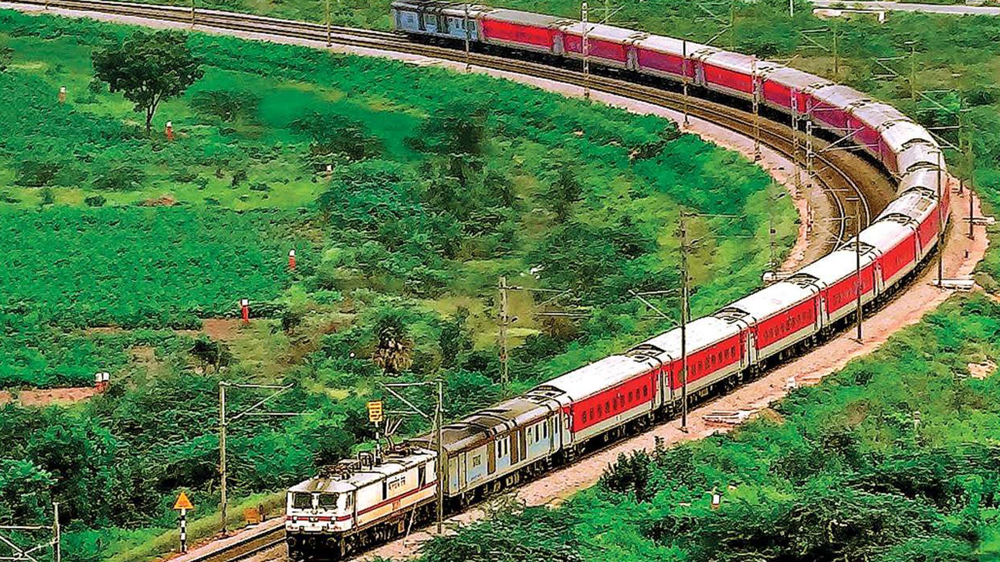
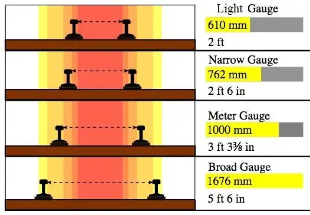

16 Transport Railways
Transport - Railways

Railways are a mode of land transport for bulky goods and passengers over long distances. The railway gauges vary in different countries and are roughly classified as broad (more than 1.5 m), standard (1.44 m), metre gauge (1 m) and smaller gauges. The standard gauge is used in the U.K. Commuter trains are very popular in the U.K., U.S.A, Japan and India. These carry millions of passengers daily to and fro in the city. There are about 13 lakh km of railways open for traffic in the world. Europe has one of the most dense rail networks in the world. There are about 4,40,000 km of railways, most of which are double or multiple-tracked. Belgium has the highest density of 1 km of railway for every 6.5 sq km area. The industrial regions exhibit some of the highest densities in the world. The important rail heads are London, Paris, Brussels, Milan, Berlin and Warsaw. Passenger transport is more important than freight in many of these countries. Underground railways are important in London and Paris. Channel Tunnel, operated by Euro Tunnel Group through England, connects London with Paris. Trans-continental railway lines have now lost their importance to quicker and more flexible transport systems of airways and roadways.
Importance of Railways in India
The backbone of Transport: Railways serve as the primary mode for long-distance passenger and bulk freight transport in India. Affordable and Accessible: Offers relatively low-cost transport options, making it accessible to a broad population. Economic Impact: Railways boost economic growth by connecting markets, facilitating trade, and enabling mobility for labour. Employment Generation: One of India’s largest employers, railways provide jobs in multiple roles including engineering, operations, and maintenance.
Overview and Structure of Indian Railways
Fourth Largest Network: Indian Railways is one of the largest rail networks globally, covering over 67,000 km and 7,000+ stations. Ownership: It’s state-owned and managed by the Ministry of Railways under the Government of India. Zonal Divisions:
The network is divided into 18 railway zones to streamline administration and operations.
Major zones include Northern, Southern, Eastern, and Western Railways. Northern Railway (headquartered in Delhi) is one of the largest.
| S.N. | Railway Zone | Headquarter |
|---|---|---|
| 1 | Eastern Railway | Kolkata |
| 2 | Western Railway | Mumbai Churchgate |
| 3 | Northern Railway | New Delhi |
| 4 | Southern Railway | Chennai |
| 5 | Central Railway | Mumbai Churchgate |
| 6 | East Central Railway | Hajipur |
| 7 | East Coast Railway | Bhubaneswar |
| 8 | West Central Railway | Jabalpur |
|---|---|---|
| 9 | South Central Railway | Sikandarabad |
| 10 | South Eastern Railway | Kolkata |
| 11 | North Frontier Railway | Malegaon, Guwahati |
| 12 | North Eastern Railway | Gorakhpur |
| 13 | South Western Railway | Bangalore |
| 14 | North Central Railway | Prayagraj |
| 15 | South East Central Railway | Bilaspur |
| 16 | Kolkata Metro Railway | Kolkata |
| 17 | South Coast Railway | Vishakhapatnam |
| 18 | North Western Railway | Jaipur |
Gauges in Railway Track:
In railway terminology, gauge refers to the distance between the inner faces of the two rails of a railway track. This distance is critical as it determines the type of trains and the compatibility of rolling stock that can operate on a track. Gauges vary in size around the world, affecting the efficiency, speed, and capacity of railway networks. Here are some key aspects of railway gauges:
| Gauge Type | Width (mm) | Width (ft/in) |
|---|---|---|
| Light Gauge | 610 mm | 2 ft |
| Narrow Gauge | 762 mm | 2 ft 6 in |
| Meter Gauge | 1000 mm | 3 ft 3⅜in |
| Broad Gauge | 1676 mm | 5 ft 6 in |

Classification of Indian Trains
Passenger Trains:
Superfast and Express Trains: Operate over long distances with fewer stops (e.g., Rajdhani, Shatabdi, Duronto). Mail/Express Trains: Cover long distances, offering a balance of speed and more stops. Local Trains/Suburban Rail: Operates within metro cities like Mumbai, Chennai, and Kolkata, providing daily commute services.
Freight Trains:
Play a crucial role in transporting bulk goods, including coal, minerals, food grains, and petroleum. Key to sectors like steel, cement, and fertilizers due to efficient cost per ton-km.
Major Government Initiatives and Programs
Dedicated Freight Corridors (DFC)
Dedicated rail lines specifically for goods trains, reducing the congestion on passenger routes. Eastern DFC: From Ludhiana to Dankuni, mainly transporting coal and industrial products. Western DFC: From Dadri to Jawaharlal Nehru Port, facilitating containerized freight movement. Aims to reduce travel time for freight and ensure faster delivery.
High-Speed Rail Projects
Mumbai-Ahmedabad High-Speed Rail Corridor (MAHSR) - India's first bullet train
project. Will cover about 500 km in approximately 2 hours compared to the current 7-8 hours. Shows a push towards modernization and speed enhancement in passenger rail services.
Indian Railway Station Redevelopment Project
Upgrades railway stations to meet international standards, including amenities like improved waiting areas, restrooms, and food courts. Gandhinagar and Habibganj (Bhopal) are two examples of redeveloped stations.
Train 18 (Vande Bharat Express)
India’s first semi-high-speed train, manufactured indigenously. Operates between New Delhi and Varanasi, running at speeds up to 180 km/h with improved passenger comfort and reduced travel times.
Digital Initiatives
IRCTC (Indian Railway Catering and Tourism Corporation) - Provides online
ticket booking, meal booking, and tourism packages. Railway Wi-Fi Initiative: Free Wi-Fi across more than 6,000 railway stations, enhancing digital accessibility.
Mission Raftaar
An initiative to increase the average speed of freight trains to 50 km/h and passenger trains to 80 km/h. Encompasses track upgrades, rolling stock enhancements, and improved signalling systems.
Green Initiatives
Focuses on reducing carbon emissions, introducing bio-toilets, and enhancing the use of solar power across railway stations and some train coaches. Encourages energy-efficient lighting and solar panel installations.
Important Railway Routes and Corridors
Golden Quadrilateral:
Links Delhi, Mumbai, Chennai, and Kolkata, similar to the roadways Golden Quadrilateral. It is one of the busiest routes, handling a major portion of passenger and freight traffic.
Rajdhani and Shatabdi Routes:
Rajdhani Express: Connects New Delhi to state capitals, ensuring fast connectivity. Shatabdi Express: Operates on high-priority routes like Delhi to Bhopal and Delhi to Ajmer, focusing on shorter, high-demand distances.
Tourism-Oriented Trains:
Palace on Wheels: A luxury train operating in Rajasthan, showcasing royal heritage and tourist sites. The Maharajas’ Express:
Another luxury train catering to both domestic and international tourists.
Major Challenges Faced by Indian Railways
Overcrowding:
High demand for passenger seats, especially in suburban and long-distance trains. Financial Constraints: Heavy dependence on budget allocations and high subsidies on passenger fares. Ageing Infrastructure:
Old tracks and equipment lead to frequent breakdowns, accidents, and slow speeds. Safety Concerns: Train derailments, level crossing accidents, and fire hazards remain ongoing issues. Land Acquisition: Challenges in acquiring land for new tracks, DFCs, and station redevelopment projects.
Key Facts
Longest Railway Platform: Gorakhpur Junction, Uttar Pradesh. Oldest Railway Line: Mumbai-Thane (introduced in 1853). Fastest Train: Vande Bharat Express (Train 18), New Delhi to Varanasi. World Heritage Sites: Darjeeling Himalayan Railway, Nilgiri Mountain Railway, and Kalka-Shimla Railway are UNESCO World Heritage sites.